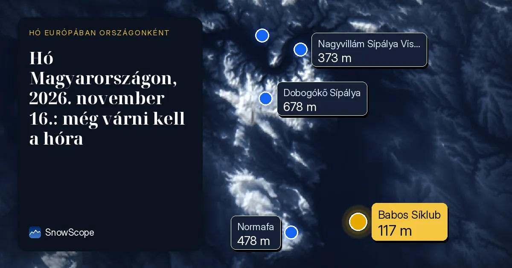

Hójelentések · Hó Európában országonként
Hó Európában országonként: Magyarországon ma alig van hó: nagyjából 0 km² fehér terület.
Snow by country today
The whitest countries today: Austria (100 %), Hungary (100 %) and Poland (100 %).
Most new snow in the week ahead: North Macedonia (34 cm), Kosovo (33 cm) and Bulgaria (32 cm).
| Country | White | Deepest resort | Next 7 days |
|---|---|---|---|
| Austria | 100 % | Stubaier Gletscher · 75 cm | 2 cm |
| Hungary | 100 % | Dobogókő Sípálya · 8 cm | 2 cm |
| Poland | 100 % | Kasprowy Wierch · 36 cm | 5 cm |
| Slovakia | 100 % | Vysoké Tatry · 33 cm | 2 cm |
| Ukraine | 99 % | Драгобрат · 22 cm | 10 cm |
| Sweden | 96 % | Björkliden · 137 cm | 16 cm |
| Slovenia | 96 % | Sella Nevea · 60 cm | 10 cm |
| Finland | 95 % | Pyhä · 28 cm | 6 cm |
| Norway | 93 % | Riksgränsen · 166 cm | 31 cm |
| Andorra | 91 % | Ordino-Arcalis · 25 cm | 14 cm |
| Czechia | 84 % | Ski areál Karolinka · 28 cm | 5 cm |
| Switzerland | 78 % | Ovronnaz · 70 cm | 1 cm |
| Romania | 60 % | Șureanu · 41 cm | 9 cm |
| Germany | 40 % | Zugspitze · 74 cm | 1 cm |
| Italy | 37 % | Courmayeur · 77 cm | 4 cm |
| UK | 30 % | Nevis Range · 28 cm | 12 cm |
| France | 25 % | La Grave · 162 cm | 10 cm |
| Bulgaria | 24 % | Vitosha · 28 cm | 32 cm |
| Montenegro | 21 % | Ski centar Savin kuk · 39 cm | 18 cm |
| Croatia | 20 % | Sljeme · 15 cm | 14 cm |
| Serbia | 13 % | Tornik · 21 cm | 26 cm |
| Kosovo | 12 % | Brezovica · 28 cm | 33 cm |
| Albania | 11 % | – | 22 cm |
| Bosnia and Herzegovina | 10 % | Skijalište Kozara · 21 cm | 13 cm |
| North Macedonia | 8 % | Mavrovo · 39 cm | 34 cm |
| Spain | 5 % | Candanchu · 41 cm | 10 cm |
| Greece | 5 % | Χιονοδρομικό Κέντρο 3-5 Πηγάδια · 34 cm | 20 cm |
| Ireland | 0 % | – | 1 cm |
| Portugal | 0 % | – | 1 cm |
Hó Magyarországon, 2026. november 16.: még várni kell a hóra

Magyarországon ma alig van hó: nagyjából 0 km² fehér terület.
Hótakaró ma
Ez közel van az egy héttel korábbi 0 km² értékhez. A terület szinte ugyanakkora, mint tegnap.
vasárnap, 2026. november 22.
hétfő, 2026. november 16.
SnowScope a telefonjánHóvastagság minden sípályára, friss hó riasztások és 3D térkép, ingyen.
Alkalmazás letöltése